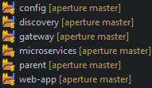

Start by cloning the repository to your local workspace. For me this will be in my D:/eclipse-workspace folder. Import the projects into your preferred IDE. You should have something like this:
There are a lot of projects to cover here but they've been separated into logical groups. If you look through some of them, you might not find as much code as you would expect. Spring Boot/Cloud takes care of a large amount of the boiler plate code for you. As a result, most of the work for us (at least in the beginning) is to set up the configuration files.
Let's start with the parent project. As you can see it contains a pom.xml and a sub-module called service-parent. Opening up service-parent, you can see it only contains a pom.xml. These projects will be used to establish project wide properties, configuration, and maven dependencies. Dependencies placed in the parent pom will be included for every project in the repository. Dependencies placed in the service-parent pom will be included in every sub-module of the microservice project.
The microservice project is the main focus of this repository. This project contains 4 main modules:
The config module is a small spring boot application which, when run, starts a tomcat server that provides the appropriate property files to the requesting application. This means that all configuration is stored and hosted by this server. This is to help us maintain our configuration files in a centralized location and even share properties across multiple projects without redundancy. The property files can be pulled from the classpath of the config project, from somewhere on the file system, or even from a designated repository. In the provided config module, I've decided to host the property files in a separate repository. Later on in the setup section I'll discuss how to create your own configuration property repository and point to it.
The discovery module is another small sping boot application used to keep track of running instances of microservices. For example, if a lot of users on a website are trying to use a feature handled by one of our microservices, we might need to spin up multiple instances of that microservice to prevent the server from being overwhelmed with traffic. The discovery service will keep track of all microservices, their name, port, and address. It even has built-in load balancing to alternate traffic to different instances.
The gateway module is yet again another small spring boot application. The purpose of this app is more or less exactly what it sounds like. It acts as a single entry point for all of your microservices. You might wonder, why bother with the gateway? Why not just go directly to the discovery service and have it provide my client with a valid url to a running instance of the microservice it needs to access? While that may work, you'd be missing out on other features a gateway can provide. You can route different clients to services specific to them, you can ensure the client is authorized to make the request and you can take one request and spread it across multiple services for your client while they only have to deal with one.
The user module is a microservice that handles work that other clients / web apps actually care about. It should only concern itself with performing tasks relevant to the name of the module, (user). It can Create, Read, Update, Delete users. By now you've probably noticed that the user module is broken down further into more sub-modules. This is because in order for other clients to use the microservice, they'll need to be aware, to some extent, what methods to call, what data to provide, what data is being returned, etc. The -api module is consumed by both the -client and -provider modules. It should not be consumed directly by any other project. This is because the -api only contains the interfaces and classes that describe what the service and models should look like. The -client module will be consumed by other clients that want to interact with the microservice. The -client's job is to specify what methods to call and what endpoints they map to. Finally we have the -provider. The -provider is the actual meat and potatoes of the microservice. Here you have your controller for handling requests, your service for business logic, and your dao for accessing your data repository.
The last project to cover is pretty self explanatory. The web-app is just another client as far as the microservice architecture is concerned. It pulls its configuration from the config service and it calls other microservices by going through the gateway. You might notice that the web-app doesn't explicitly define a controller for reaching out to the gateway or interacting with the user service. That's the magic of @FeignClient. In the web-app pom.xml, we bring in the user-client. Spring Boot will automatically generate an implementation of this interface for us. From here, we have two options: We can autowire the UserClient and call the methods ourselves or we can let the front end hit the endpoint defined by the user-client directly. The first option gives us the flexibility to transform our request and handle our response. OpenFeign will map our method calls on the UserClient to the url + endpoint we specified in the UserClient / UserEndpoint interfaces. It acts as if we are calling the UserProvider directly when in reality it is performing an HTTP request in the background. Option 2 works in a similar way except we don't have to do any additional coding. The front end will call /aperture/user-api/user/{user-id}. Again, OpenFeign works its magic and redirects that to the gateway which then calls the provider for us.